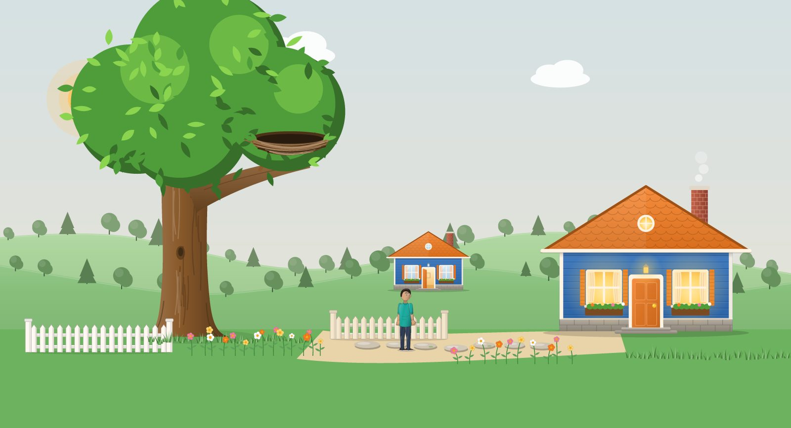
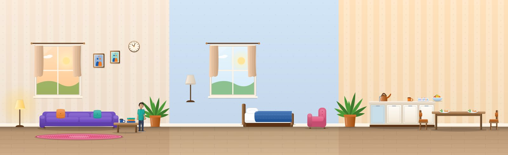
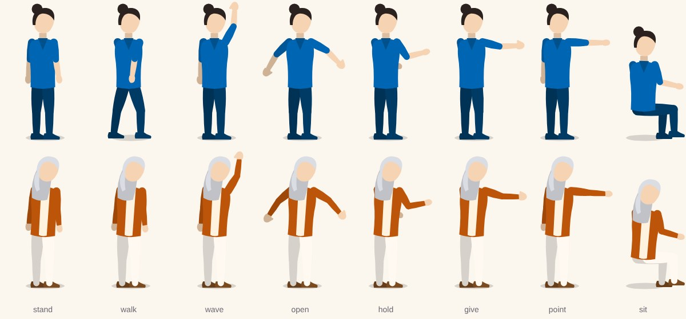
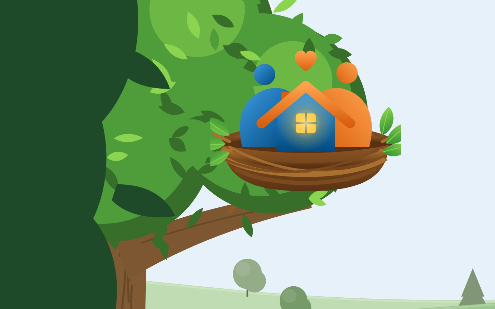
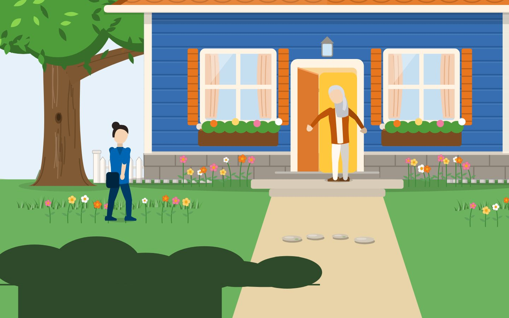
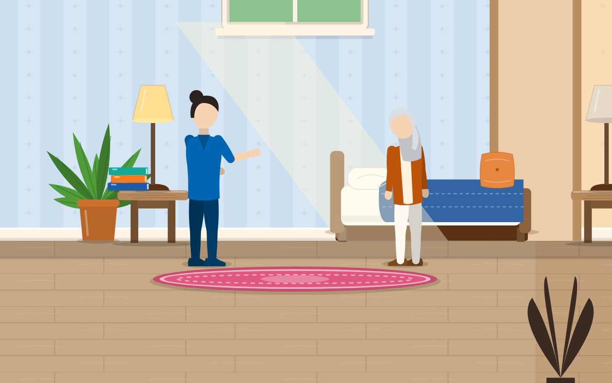
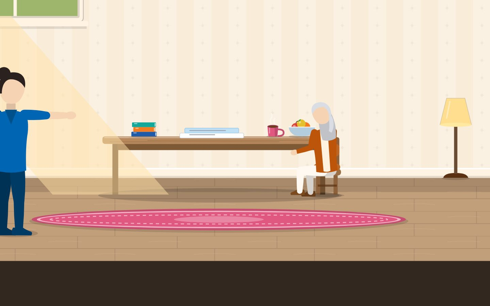
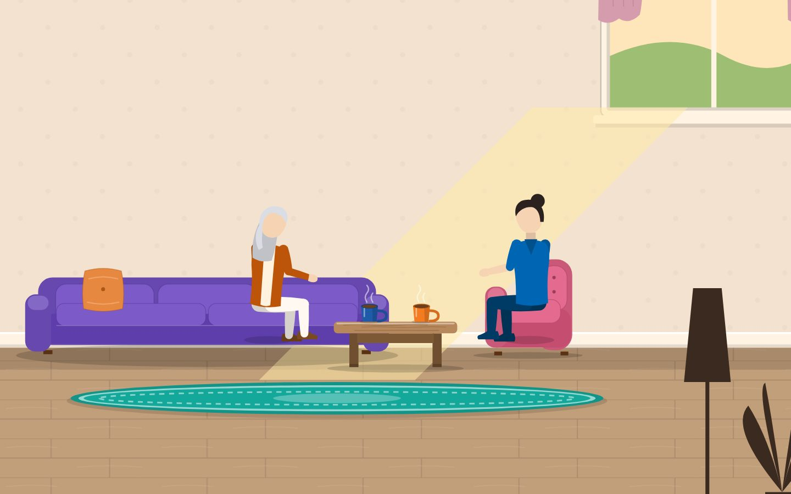
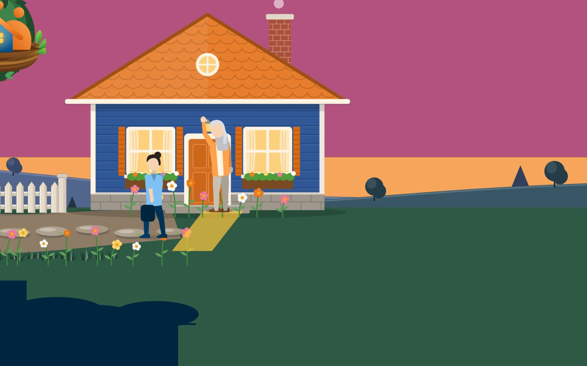

SafeNest Story Art Kit
The drawn pieces behind the six story pages. Flat solid colours only. The carer wears blue scrubs, the person cared for an orange cardigan; warm window light is the accent. Back to the preview
Kit test sheets
Every piece drawn once, to check style and readability.



The six worlds
Desktop captures of each page's opening shot (static frames; the page scrolls through a camera path).






Where things live
| File | Job |
|---|---|
worlds/figure.jsx | Figure builder (see FIGURE-STYLE.md) |
worlds/outdoors.jsx, indoors.jsx | Environment pieces |
worlds/art.jsx | Shared drawing helpers |
worlds/light.jsx | Lighting kit: palettes, light shafts, dark foreground shapes |
lib/flatten.js | Flattens any remaining gradients at load |
worlds/home, about, services, living, contact.jsx | One drawn world per page |
tools/ | World preview, contrast audit, fps measure, element count |
Budget and element counts: KIT-BUDGET.md. Progress notes: Phase.*-CF-*.md.